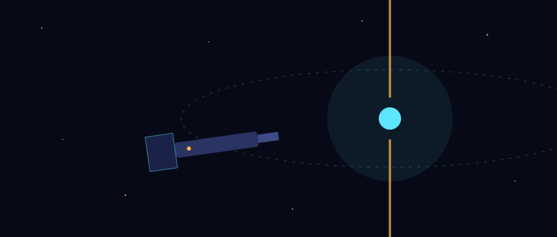
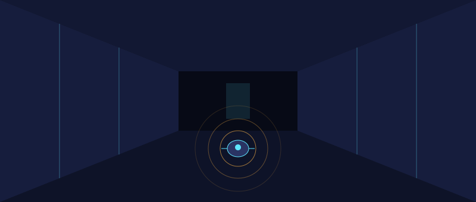

Les Archives de Vela
Le premier jeu du studio Flexarion. Une exploration de science-fiction lente et sonore, à bord d'un vaisseau que tout le monde a oublié.

L'univers
Au XXIVe siècle, l'humanité a envoyé des vaisseaux-archives aux quatre coins de la galaxie pour y conserver sa mémoire. L'un d'eux, le Mnémosyne, s'est arrêté en orbite autour du pulsar de Vela, à près de 1 000 années-lumière de la Terre. Puis, un jour, il a cessé d'émettre.
Trois cents ans plus tard, vous vous réveillez dans la peau d'ORA, un petit drone de maintenance. L'équipage a disparu. Les bases de données sont corrompues. Mais le vaisseau, lui, a tout entendu : chaque conversation, chaque pas, chaque dispute a laissé une trace sonore dans ses coques métalliques.
« Les étoiles mortes continuent de battre. Peut-être que les vaisseaux aussi se souviennent. »
Les mécaniques de jeu
Écouter
ORA capte les échos enregistrés dans les murs du vaisseau. Chaque fragment sonore est une pièce du puzzle de la mémoire de l'équipage.
Synchroniser
Le pulsar bat 11 fois par seconde. Certaines portes ne s'ouvrent qu'en calant ses actions sur ce rythme cosmique.
Reconstituer
Remettez les souvenirs dans l'ordre pour reconstruire l'histoire du Mnémosyne et comprendre ce qui est arrivé à son équipage.

Pas de combat, pas de mort, pas de chronomètre : Les Archives de Vela se jouent à son rythme, idéalement avec un casque audio.
Fiche technique
- Studio : Flexarion (Aix-en-Provence)
- Genre : exploration narrative, énigmes sonores, science-fiction
- Plateforme : PC (Windows, Linux)
- Durée de vie estimée : 5 à 6 heures
- Modèle : démo gratuite, puis sortie en accès anticipé payant
- Langues : français, anglais
- Statut : en développement
Suivez l'avancement du jeu dans notre devlog ou contactez le studio.